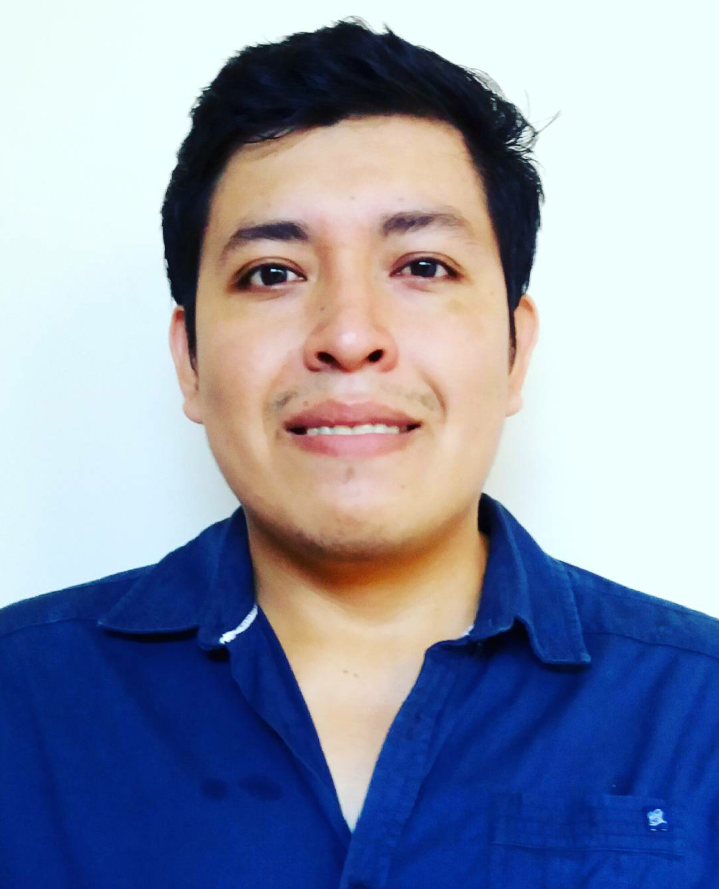

Ronald Daniel Ajila Calva 
Estudiante de Postgrado
ETSISI
UPM


Estudiante de Postgrado
ETSISI
UPM


Ingeniero en Ciencias Computacionales orientación Sistemas de Información de la ”Escuela Superior Politécnica del Litoral”. Me considero una persona responsable, dinámico, comprometido con la empresa y con muchas ganas de trabajar y aprender. Gusto del estudio, soy autodidacta por naturaleza; pongo especial atención en detalles. Facilidad de adaptación y capacidad de trabajar en equipo, con iniciativa para resolver problemas eficientemente y lograr las metas y objetivos trazados por la empresa.